2.星々の環境でクライアントスクリプトを動かしてみる
ここでは、作成したクライアントスクリプトが、星々の幻境で動くことを確認します。
⭐クライアントスクリプトを新規作成する
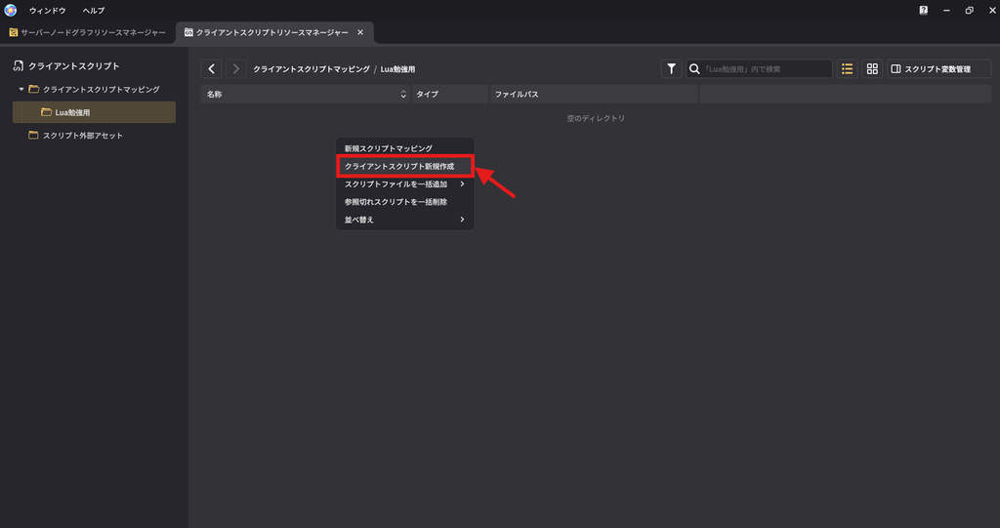
星々の幻境エディタの方で、フォルダを開いて、その中で右クリックメニューから「クライアントスクリプト新規作成」をクリックします。
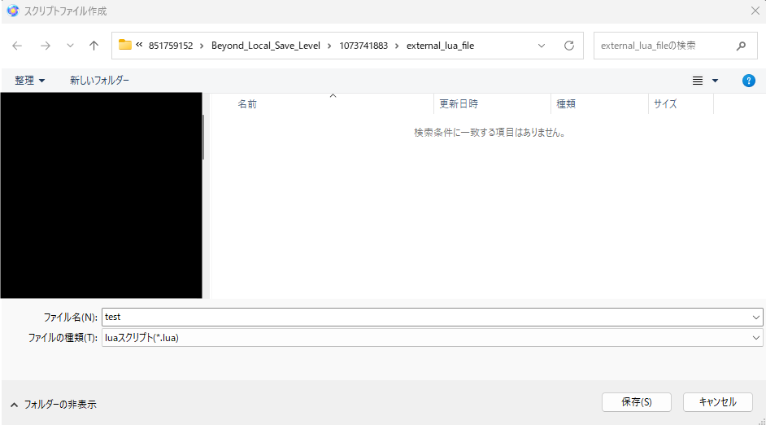
ファイル名に「test」と入力して、保存をクリックします。
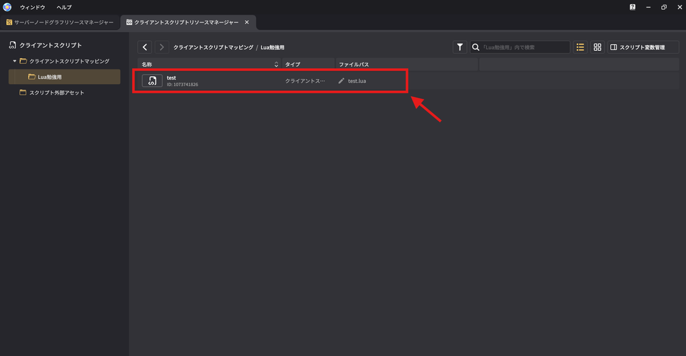
「test」が作成されました。
VSCodeの方を確認してみると、
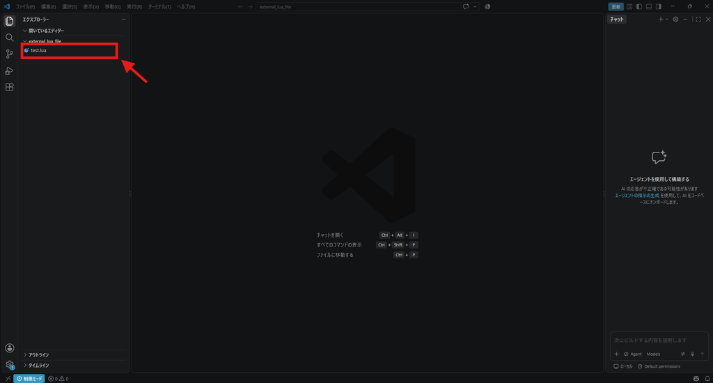
作成した「test」に拡張子「.lua」がついたファイルが表示されています。
新規作成した場合は、名称とファイルパスの名前が同じですが、違っても問題ないので星々の幻境側は日本語に変えてしまいます。
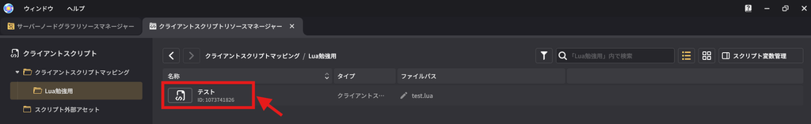
⭐星々の幻境以外からファイルを作成した場合
別のルートから作成した場合は星々の幻境側でファイルを紐づける必要があります。
いくつか方法がありますが、
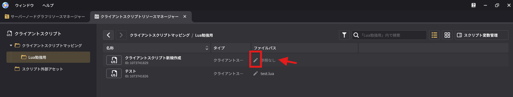
右クリックメニューから「新規スクリプトマッピング」をクリックして、できたファイルのファイルパスから該当のファイルを選択する。
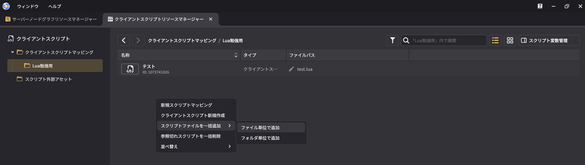
右クリックメニューから「スクリプトファイルを一括追加」→「ファイル単位で追加」で該当のファイルを選択する。
※「フォルダ単位で追加」を選ぶと、フォルダを選択するようになり、そのフォルダ内のluaファイルがごっそり追加される感じだと思います。
これらの方法で別ルートで作成したファイルを星々の幻境に紐づけることができます。
また、新規作成でファイルを作成した場合でも作成後にそのファイルを別の保存場所に移動した場合、ファイルパスからファイルの参照先を再設定する必要があります。
⭐クライアントスクリプトをクライアントモジュールに紐づける
ノードグラフを動かすには、エンティティに紐づける必要があるのと同じですね。
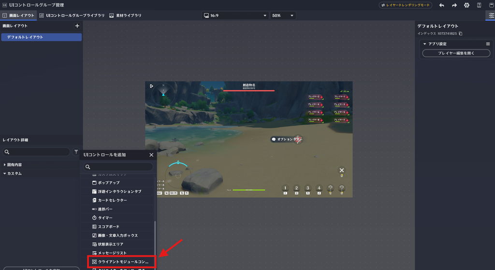
UIコントロールグループ管理に移動します。
Ver7.1のアプデで、UIコントロールが「サーバーモジュール」と「クライアントモジュール」に分類されるようになりました。
今まで使用していたノードグラフで動かしていたのが、すべて「サーバーモジュール」です。
クライアントモジュールを早速作成したいところなのですが、その前にサーバーモジュールの「クライアントモジュールコンテナ」を作成します。
「クライアントモジュール」は、「クライアントモジュールコンテナ」の中でないと動かないからです。
※浮遊インタラクションタブみたいな感じです。
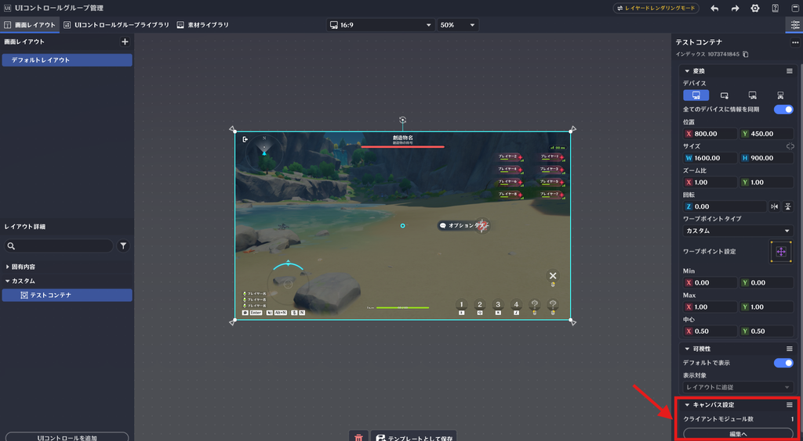
クライアントモジュールコンテナの名前を「テストコンテナ」に変更しました。
このテストコンテナをクリックして、右側のキャンパス設定の「編集へ」をクリックします。
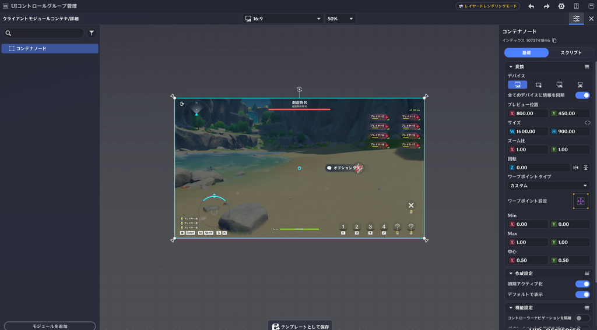
最初から「コンテナノード」が作成されていました。
これはどうやら削除することはできないようです。
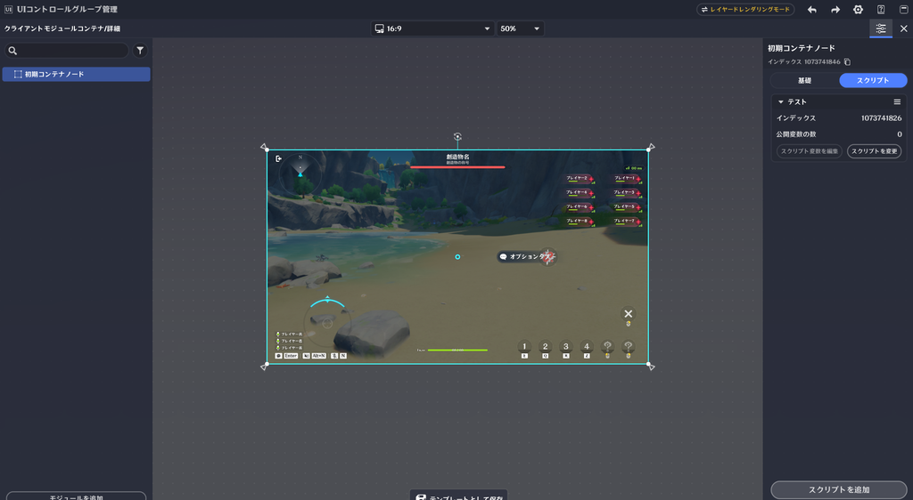
この最初からあるコンテナノードの名前を、「初期コンテナノード」に変更しました。
初期コンテナノードをクリックして、右メニューからスクリプトタブへ移動します。
スクリプト追加から、先ほど作成した「テスト」というクライアントスクリプトを紐づけます。
※ノードグラフの紐づけと同じ感じです。
⭐クライアントスクリプトを編集する
今回、私はVSCodeでやりますが、メモ帳などのPCに入っている既存のテキストエディタからでもできます。
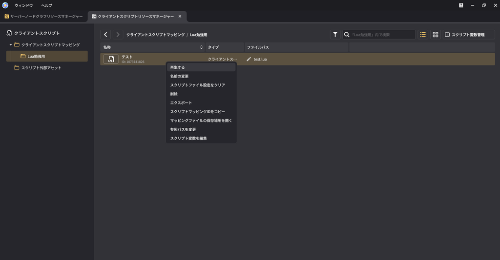
編集するクライアントスクリプトを右クリックしてメニューを開き、「再生する」をクリックします。
※「再生する」ってかなりわかりにくい翻訳ですね…
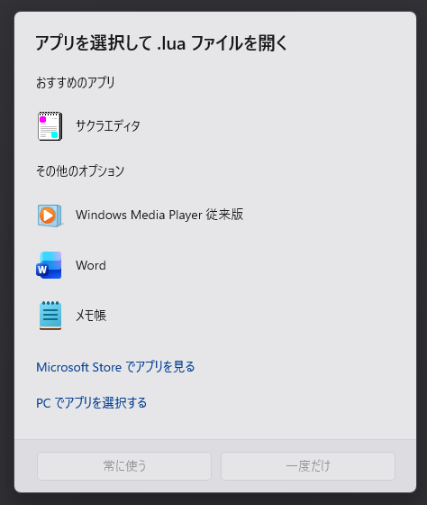
すると、こんなポップアップが出てくるので、編集するためのテキストエディタを選択します。
※今回は、メモ帳を開きます。
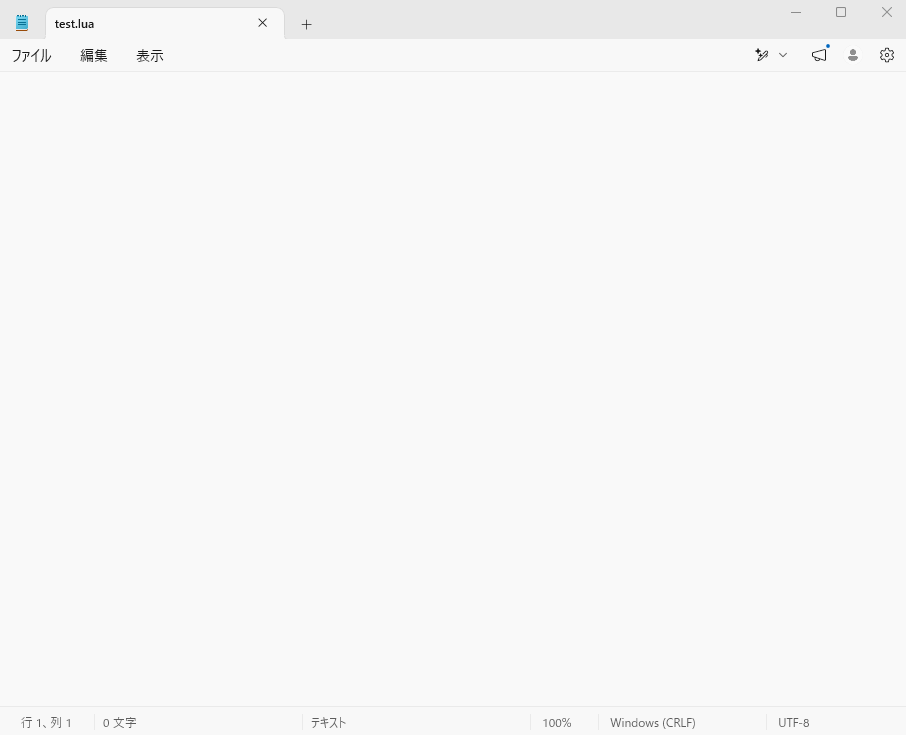
こんな感じでテキストエディタが開くので、ここにソースコードを書きこんで保存することでクライアントスクリプトを編集できます。
VSCodeを使わない場合は、このやり方で編集してください。
それでは、VSCodeで編集してきます。
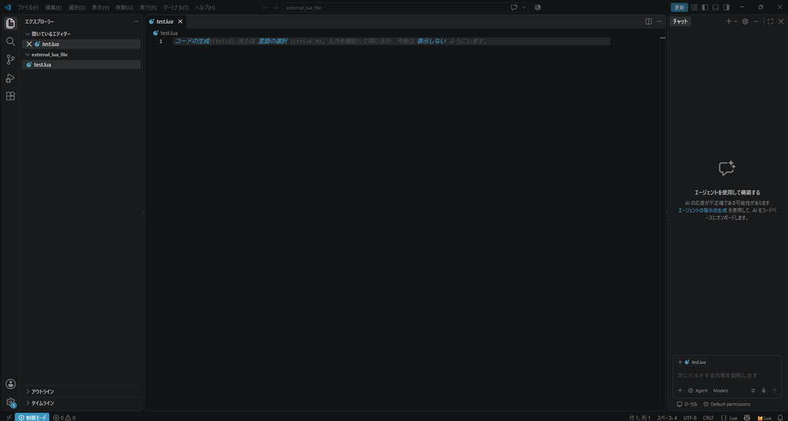
左側のエリアから「test.lua」をクリックすることで、真ん中のエリアに「test.lua」が開くのでここにソースコードを書けるようになります。
🌸試しにいくつかファンクションを設定してみる
呼び出しイベントの枠をいくつか設定してみます。
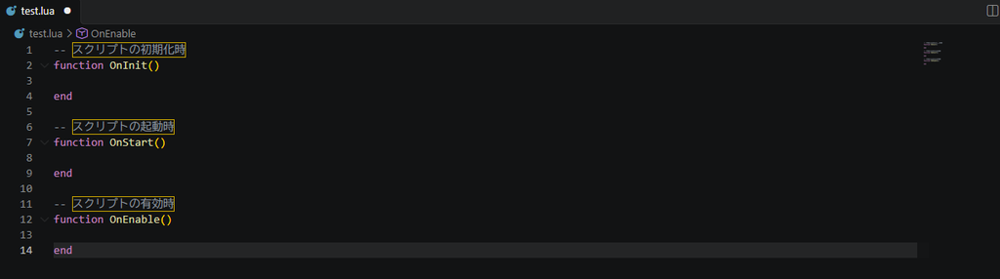
-- スクリプトの初期化時
function OnInit()
end
-- スクリプトの起動時
function OnStart()
end
-- スクリプトの有効時
function OnEnable()
end
各ファンクションの中にログ出力の記述をします。
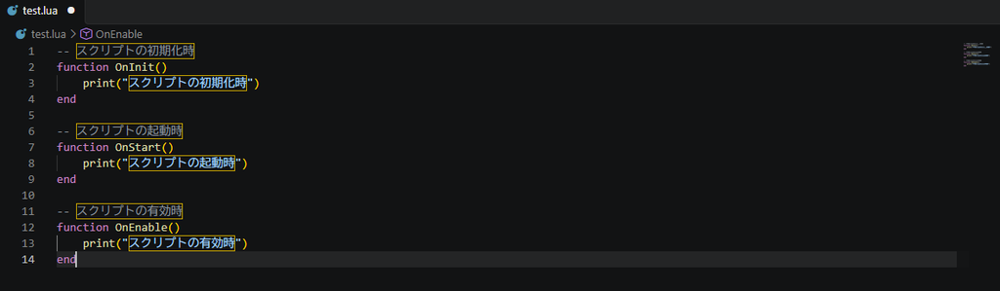
-- スクリプトの初期化時
function OnInit()
-- スクリプトの起動時
function OnStart()
-- スクリプトの有効時
function OnEnable()
とりあえず、これで動かしてみましょう。function OnInit()
print("スクリプトの初期化時")
end-- スクリプトの起動時
function OnStart()
print("スクリプトの起動時")
end-- スクリプトの有効時
function OnEnable()
print("スクリプトの有効時")
end編集したファイルは必ず保存してくださいね。
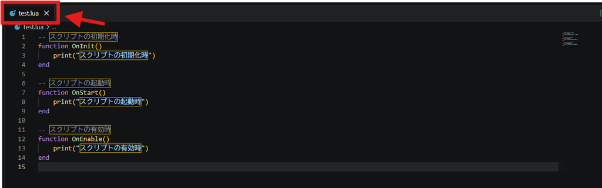
編集したファイルに「●」がついていなければ保存済みです。
⭐ログの設定
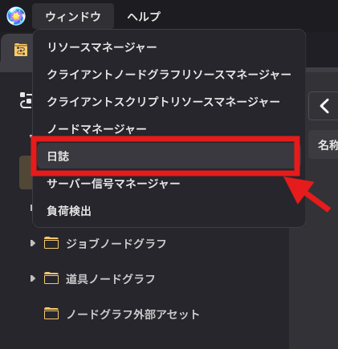
星々の幻境エディタ画面に戻って、ウィンドウから「日誌」をクリックします。
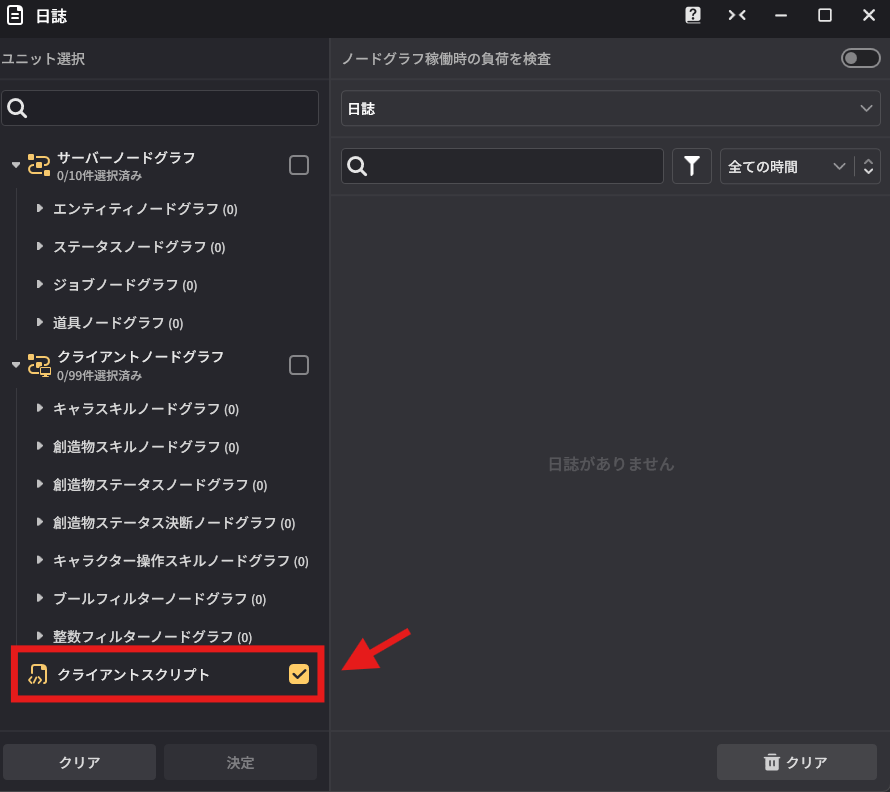
クライアントスクリプトにチェックを入れたら、決定します。
その後はテストプレイをしてみます。
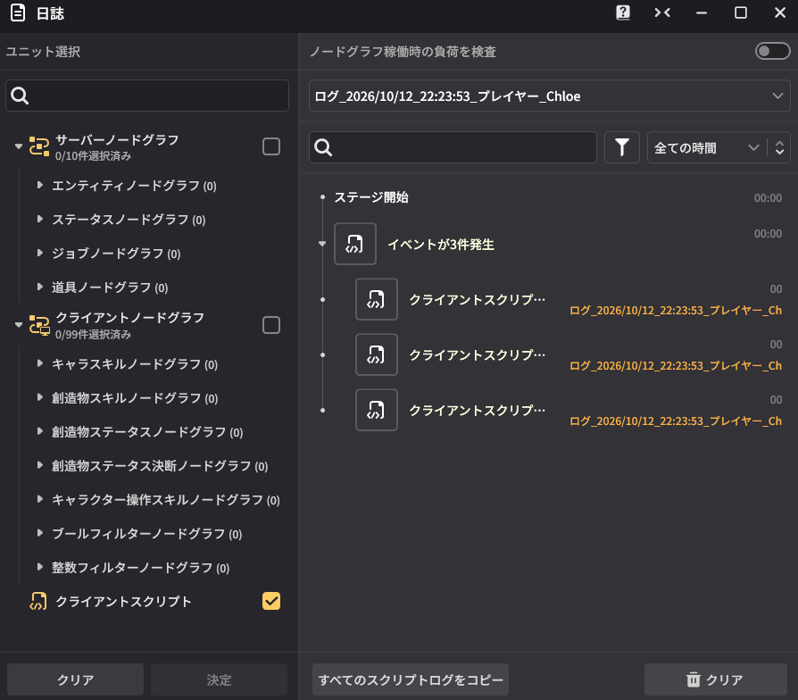
無事に動いていますね。
ログの内容を見ると、「スクリプトの初期化時」→「スクリプトの有効時」→「スクリプトの起動時」の順で動いているようです。
ひとまず動くことは確認できたので安心しました。